目錄
- 1. 軟體簡介
- 2. 系統需求與啟動
- 3. 介面總覽與布局
- 4. Cue 類型與特點
- 5. 音訊編輯與波形控制
- 6. 影像設定與排程控制
- 7. 螢幕與幾何校正 (Keystone & Mesh)
- 8. 局部遮罩與全域遮罩開關
- 9. 播放控制與鍵盤快速鍵
- 10. 時間碼系統 (Timecode)
- 11. 視訊預覽視窗 (Video Preview)
- 12. 專案管理與打包傳遞
- 13. FADE 漸變與連續鏈控制
- 14. 多螢幕投影與網路視訊串流 (RTSP & NDI)
- 15. 網路控制 Cue (Network Cue)
- 16. sACN (E1.31) 燈光網路遙控
- 17. 雙機熱備份與連線同步 (Dual-Machine Redundancy)
- 18. 故障排除
1. 軟體簡介
Cue Lab 是一款專為舞台劇場、多媒體展演及藝術展示所開發的專業級「多媒體 Show Control 控制播放軟體」。系統支援在外部投影幕或副螢幕進行獨立的高畫質影像輸出，具備先進的幾何梯形校正、遮罩融合及多軌音訊路由等現場執行功能，旨在為劇場設計師提供高效、穩定且直覺的播放體驗。
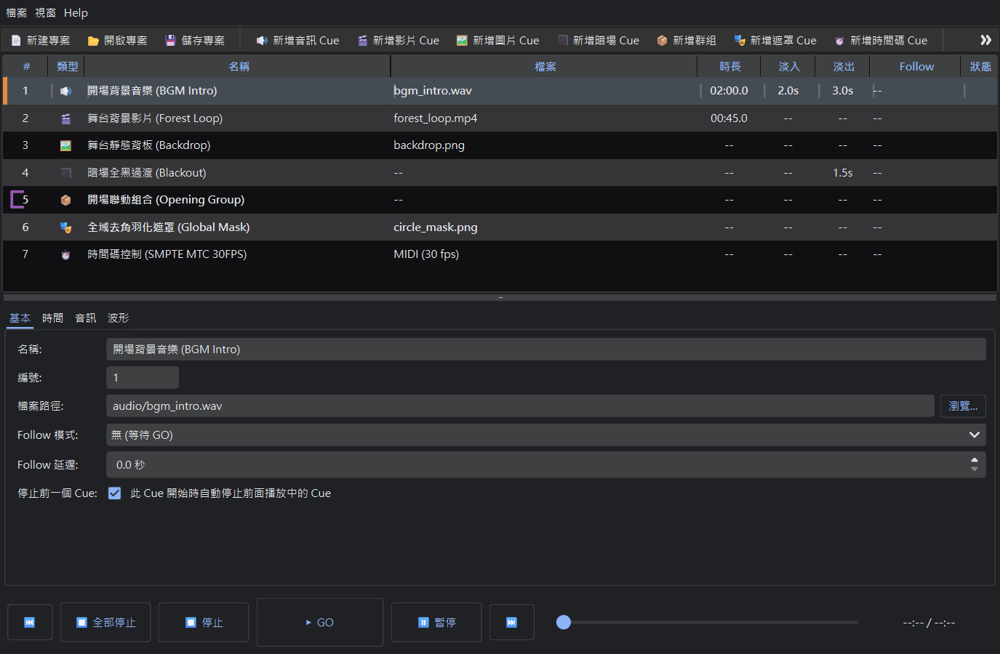
核心技術特點
🔊 獨立音訊路由
支援為不同音訊軌獨立選擇本機實體音效卡輸出，完美適配現場環繞立體聲或多聲道路由需求。
🎬 專業影像輸出
支援在副螢幕/投影機上進行獨立的點對點高畫質影片或圖片播放，無選單欄及系統游標干擾。
📐 全網格梯形校正
內建點對點 Keystone 梯形校正，提供極細微的四角網格錨點調整，即時校正投影面偏斜。
🎭 多層級遮罩融合
支援自訂多個遮罩項目，具備 Crop（保留）、Block（遮蔽）等混合模式與獨立旋轉校正。
📦 專案一鍵打包
自動掃描並複製專案中所關聯之外部媒體，重新定位為相對路徑壓縮打包，實現無縫攜帶。
↩️ 撤銷重做系統
支援全域的 Undo / Redo 操作歷史紀錄，隨時按 Ctrl+Z 撤回錯誤的操作或參數微調。
2. 系統需求與啟動
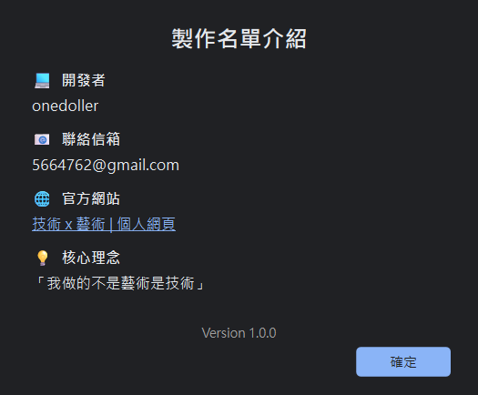
作業系統與硬體支援
| 硬體/系統項目 | 最低需求規格 | 建議規格 |
|---|---|---|
| 作業系統 | Windows 10 64-bit | Windows 11 專業版 |
| 處理器 (CPU) | Intel Core i5 等級以上 | Intel Core i7 / AMD Ryzen 7 以上 |
| 記憶體 (RAM) | 8 GB | 16 GB 以上 |
| 顯示卡 (GPU) | 支援 OpenGL 3.3 之內顯 | NVIDIA GeForce 獨立顯示卡 (影音解碼更流暢) |
| 輸出介面 | HDMI / DisplayPort (多螢幕輸出用) | 多路獨立影像輸出埠 (HDMI/DP) |
啟動步驟
解壓縮安裝包後，點擊 CueLab.exe 即可直接啟動程式。本軟體無須繁複的線上安裝或連網啟用碼即可直接執行，適合現場封閉網路的控制電腦環境。
3. 介面總覽與布局
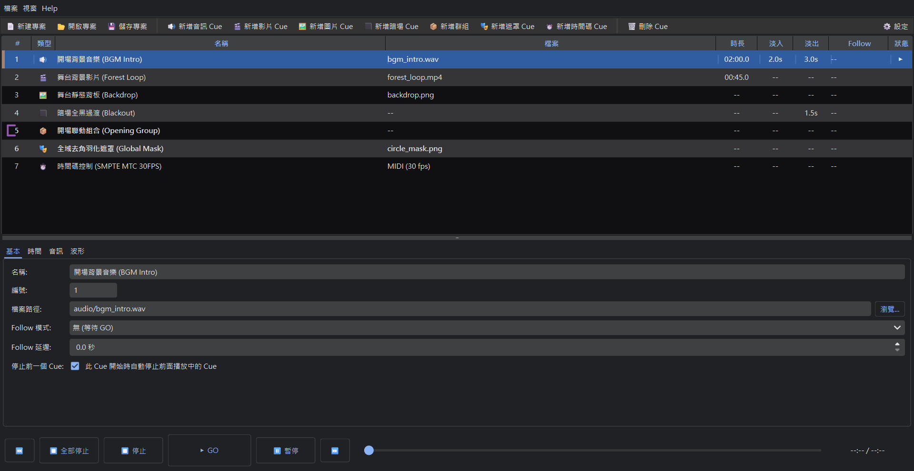
軟體主畫面主要由四個核心區域組成：頂部工具列、左側 Cue 列表表格、底部波形與編輯區以及右側屬性 Inspector 面板。
主要介面區域說明
| 介面區域 | 位置 | 功能說明 |
|---|---|---|
| 控制工具列 (Toolbar) | 視窗正上方 | 提供大型 GO、暫停、全部停止 控制鈕，以及快速新增各類型 Cue 的捷徑按鈕與設定按鈕。 |
| Cue 列表表格 (Cue List) | 視窗左側 | 顯示當前專案中所有的 Cue 播放動作，包含編號、類型圖示、名稱、關聯檔案、執行狀態與進度條等。 |
| 屬性面板 (Inspector) | 視窗右側 | 當選取某個 Cue 時，此處會列出該 Cue 的所有參數，分為「基本」、「時間」、「音訊」、「顯示」與「群組」等分頁。 |
| 波形視覺化 (Waveform) | 視窗左下方 | 音訊與影片 Cue 的波形顯示區，可直接點擊拖曳或以鍵盤方向鍵微調媒體的播放起點與終點時間。 |
💡 快速選單與右鍵操作
在 Cue 列表上按滑鼠右鍵，可開啟上下文選單，執行：複製、剪下、貼上、在上方/下方插入新 Cue、解散群組或自動重新編號等結構性動作。
4. Cue 類型與特點
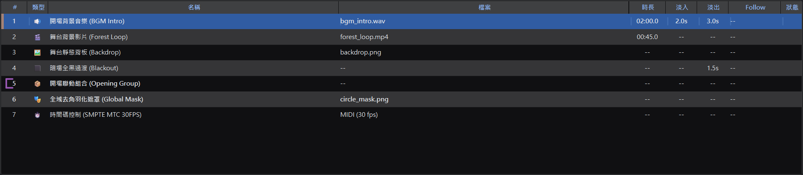
本軟體提供 9 種不同類型的 Cue，使用者可以自由組合它們來建構一個精細的演出流程：
| 類型 | 圖示 | 適用場景 | 核心控制屬性 |
|---|---|---|---|
| 音訊 Cue | 🔊 Audio | 背景音樂、效果音 | 音量大小、播放速度、起點/終點、淡入/淡出秒數、硬體輸出裝置。 |
| 影片 Cue | 🎬 Video | 動態投影、背景影片 | 除包含音訊的所有屬性外，還支援縮放模式、視覺圖層、不透明度、XY位置與大小、梯形校正與遮罩。 |
| 圖片 Cue | 🖼 Image | 靜態舞台背板 | 縮放模式、視覺圖層、不透明度、位置、大小、梯形校正與遮罩。 |
| 暗場 Cue | ⬛ Blackout | 場景轉換、全黑過渡 | 淡出時間。觸發時會將所有執行中的影片與圖片做平滑淡出，使投影顯示恢復為全黑。 |
| 群組 Cue | 📦 Group | 多檔案同時觸發、播歌清單 | 成員列表管理、播放順序。可容納多個子 Cue，實現多個媒體同時觸發播放或自動接續播放。 |
| 遮罩 Cue | 🎭 Mask | 特殊局部去角、投影羽化 | 自訂多張遮罩影像項目。可設定遮罩範圍、透明度、旋轉，並能被其他影片/圖片 Cue 關聯套用。 |
| 時間碼 Cue | ⏱️ Timecode | 設備聯動控制、跑碼同步 | 時間碼類型 (LTC/MTC)、起始偏移量 (Offset)、輸出幀率 (FPS) 與 MIDI 輸出設備埠。 |
| 漸變 Cue | 📉 Fade | 音量/不透明度/尺寸大小/幾何漸變 | 漸變時間、受控目標 Cue、音量/不透明度/位置/大小/梯形校正控制開關及目標 Limit 值、數值抓取（Grab）與實時預覽。 |
| 網路控制 Cue | 🌐 Network | 外部設備聯動、投影機/中控控制 | 網路協定類型 (OSC/PJLink)、目標設備 IP 與連接埠、控制指令路徑與變數值。 |
5. 音訊編輯與波形控制
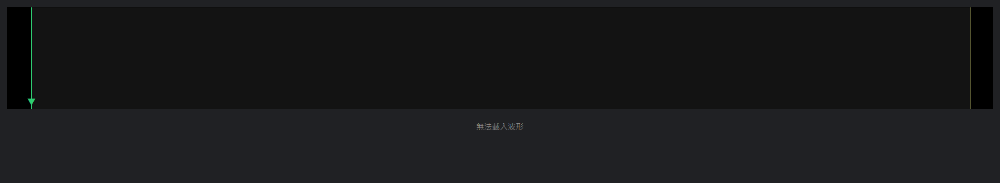
當您選取 音訊 Cue 或 影片 Cue 時，軟體下方的波形視覺化編輯器會自動繪製並載入該媒體的音軌振幅波形，方便您進行可視化的裁剪。
波形裁剪操作步驟
- 選取起點/終點線：點選波形圖中的綠色起點標記或橘色終點標記，選取的控制線會以加粗亮色高亮顯示。
- 滑鼠拖曳：直接左右拖曳高亮控制線，即可快速定位播放的起始與結束秒數。
- 鍵盤微調：選取控制線後，可使用鍵盤
←或→方向鍵以0.1 秒為步長進行前移/後移微調：- 按住
Shift+ 方向鍵：進行1.0 秒的粗調。 - 按住
Ctrl或Alt+ 方向鍵：進行0.01 秒的超微調。
- 按住
音訊屬性調整與多路路由
在屬性面板的「音訊」分頁中，您可以進行高階的多裝置路由與細緻的聲道音量控制：
- 音量 (Volume)：控制 VLC 解碼播放總音量，支援
0%到200%的增益，並提供一鍵取消勾選以執行快速靜音。 - 速度 (Speed)：支援變速播放，範圍為原速的
0.25倍到4.0倍。 - 多音訊輸出裝置 (Output Devices)：我們將原本的單選選單升級為多選設備列表（QListWidget）。此處會自動枚舉電腦連接的所有外接音效卡或音訊介面。您可以使用右側的「新增 (Add)」與「刪除 (Delete)」按鈕隨意添加多個不同的輸出路由裝置，並可透過「上移 (Move Up)」與「下移 (Move Down)」調整其順序。播放時，系統會為每個被勾選的輸出設備建立獨立的 VLC MediaPlayer 實例進行微秒級同步播放。
- 聲道獨立音量包絡線 (Channel Volume Envelopes)：在波形圖下方，系統支援針對每個輸出裝置、各個獨立聲道進行自訂的線性音量包絡調整。您可以選取對應的聲道索引（Channel），並在波形圖的音量區點擊新增、拖曳包絡控制點，從而對各個聲道在不同時間點的音量進行高精度漸變與定位分配。
多音訊裝置路由與聲道音量包絡線配置
軟體支援單個音訊 Cue 同時向多個不同的音訊輸出裝置輸出。音量包絡線不再僅限於單一裝置或全域聲道，而是針對各裝置的各個獨立聲道進行自訂的線性漸變與音量包絡調整，完美適用於多聲道現場演出或複雜的聲場路由。

多音訊裝置路由操作流程
- 新增輸出裝置：在 Inspector 屬性面板的「音訊」分頁中，點擊「新增 (Add)」按鈕，從下拉選單中選擇要輸出的實體音效卡或音訊介面。
- 管理裝置列表：選取列表中的裝置後，可以使用「刪除 (Delete)」按鈕將其移除；或使用「上移 (Move Up)」與「下移 (Move Down)」調整其路由優先順序與播放序列。
- 多路同步播放：播放時，系統會為列表中每個勾選的輸出設備建立獨立的 VLC 播放器實例進行微秒級同步播放。

改變音量標點與聲道包絡線操作流程
- 選取目標裝置與通道：切換至屬性面板的「波形」分頁，在波形圖上方選擇要編輯的輸出裝置通道索引（例如：通道 1、通道 2）。
- 新增/編輯音量標點（Envelope Points）：
- 新增標點：在波形下方的音量包絡線區域（藍色線條）點擊滑鼠左鍵，即可在指定時間位置新增一個黃色的音量標點。
- 調整音量值與時間：直接按住黃色標點進行上下拖曳（調整 0% 到 200% 的音量增益）或左右拖曳（調整時間軸位置）。
- 點對點線性漸變：系統會自動在這些標點之間進行線性插值計算，並在播放時動態改變音量，實現滑順的漸變效果。
- 數據管理：在波形分頁下方的表格中，會詳細列出所有包絡點的精準時間（秒）與音量值，您也可以直接在表格中點擊進行數值編輯或刪除標點。
6. 影像設定與排程控制
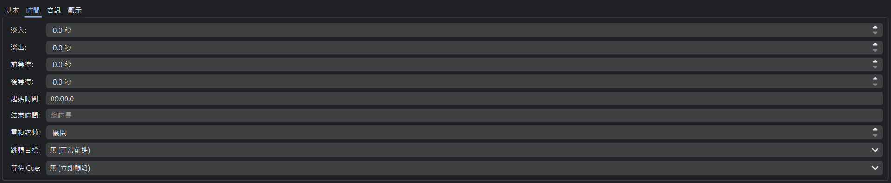
對於 影片 Cue 和 圖片 Cue，您可以在屬性面板的「顯示」分頁調整畫面佈局與排程規則：
影像幾何屬性
- 圖層層級 (Layer)：範圍為
1 ~ 10，層級愈高的 Cue 畫面會覆蓋在層級低的 Cue 之上。 - 不透明度 (Opacity)：從
0.0(完全透明) 到1.0(完全不透明)，可用於製作畫面重疊半透明融合。 - 縮放模式 (Scale Mode)：
Fit (適合)：維持原始長寬比縮放至邊框，兩側可能留黑邊。Fill (填滿)：裁剪並填滿整個輸出畫面，不留黑邊。Stretch (拉伸)：強行拉伸畫面以鋪滿整個輸出比例，可能產生變形。
- 位置與大小 (Transform)：點選
Transform按鈕可開啟獨立的可視化拖曳視窗，透過拖曳或使用方向鍵調整畫面在螢幕上的 XY 座標位置以及寬度、高度比例。
時間與排程控制 (Timing)
每個 Cue 均支援靈活的時間控制，方便打造無人值守的自動化聯動：
- Follow 模式 (自動接續)：
無 (等待 GO)：執行完畢後待命，等待使用者手動按 GO。播完後自動下一個 (Follow)：本 Cue 播放完畢（包括淡出時間）後，立即自動 GO 下一個 Cue。開始後立即下一個 (Continue)：本 Cue 開始播放的同時，立即自動觸發下一個 Cue，適用於影音同步連動。
- 重複次數 (Loop)：設定媒體重複播放次數，設為
-1表示無限循環，適用於舞台動態背景 Loop。 - 跳轉目標 (Jump Target)：當此 Cue 播放完畢後，播放指標 (Playhead) 會自動跳轉到指定的 Cue 編號，適用於非線性的跳轉流程。
7. 螢幕與幾何校正 (Keystone / Mesh Keystone)
當舞台現場投影機的投影面與銀幕呈傾斜夾角，或投影幕為非平面的曲面、異形結構時，畫面會產生幾何偏斜與畸變。軟體提供了傳統四角梯形校正 (Keystone) 與多點網格幾何校正 (Mesh Keystone) 兩種工具，滿足現場精準對位的需求。
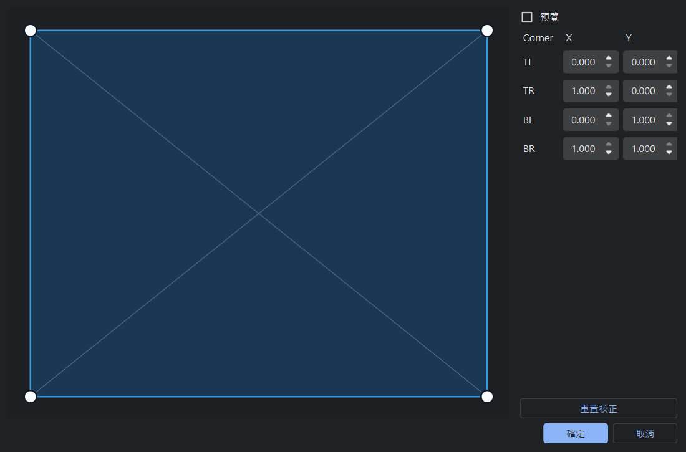
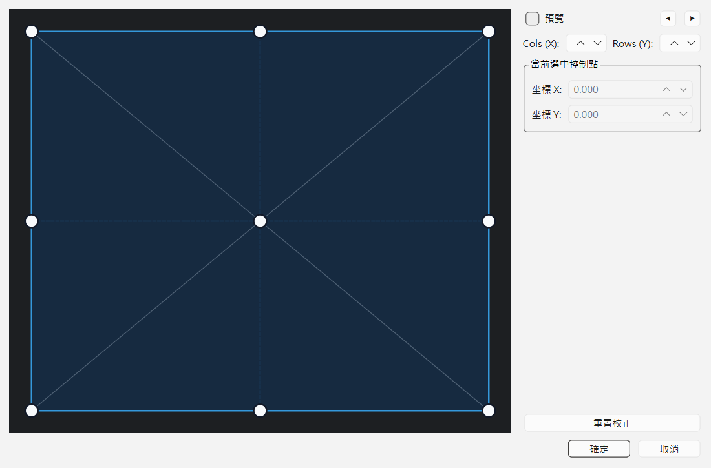
幾何校正模式與校正層級
- 全域螢幕校正 (Global Screen Calibration)：點擊功能表「設定」→ 點擊「螢幕校正」。在此定義的幾何設定會直接修改整個輸出螢幕，對應所有播放的媒體畫面。
- 單一 Cue 幾何校正 (Cue-level Calibration)：在屬性面板「顯示」分頁下，選擇「Keystone」。這只會修改該特定影片或圖片 Cue，適合用於對齊特定的投影區域。
傳統四角 Keystone vs. 多點網格 Mesh Keystone
- 四角 Keystone (4-Corner)：點對點直接拖曳投影畫面的四個角落錨點，修正基礎的傾斜與拉伸，適合平整的矩形螢幕投影。
- 多點網格 Mesh Keystone (3x3 Grid)：當啟用多點校正後，編輯器會自動在投影畫面中生成 3x3 的控制點網格（共 9 個控制點）。您可以拖曳任意格點，投影畫面會進行非線性扭曲與變形，實現完美的曲面或弧形幕對位。
幾何校正鍵盤快速鍵與高精度微調
為了方便技術人員在現場進行高精度的對位校正，幾何校正編輯器支援鍵盤操作：
- 用滑鼠點擊任意角落錨點或網格控制點以選取它（選取後會變為綠色）。
- 按鍵盤的
↑、↓、←或→方向鍵，以0.002標準化座標（約 2 像素）為單位移動選取的控制點。 - 按住
Shift+ 方向鍵：進行0.01的粗調。 - 按住
Ctrl或Alt+ 方向鍵：進行0.0005的微調，實現單像素級的精確對位。
💡 Keystone 預設圖層 (Keystone Layers)
除了為單個 Cue 設定獨立的幾何校正外，軟體更在偏好設定中提供了「全域 Keystone 預設圖層」管理功能。設計師可以為舞台上的每台投影機設定基準校正（如修正投影機吊掛的基準偏差），並將其儲存為圖層預設。當具體的影片或圖片 Cue 播放時，可直接套用該基準圖層，並在此之上疊加 Cue 獨立的梯形校正。系統在底層透過 OpenCV 的單應性矩陣（Homography Matrix）乘法將兩次變換複合為單一矩陣，GPU 僅需進行一次座標變換與渲染，完美兼顧了配置靈活性與繪圖效能。
8. 局部遮罩與全域遮罩開關
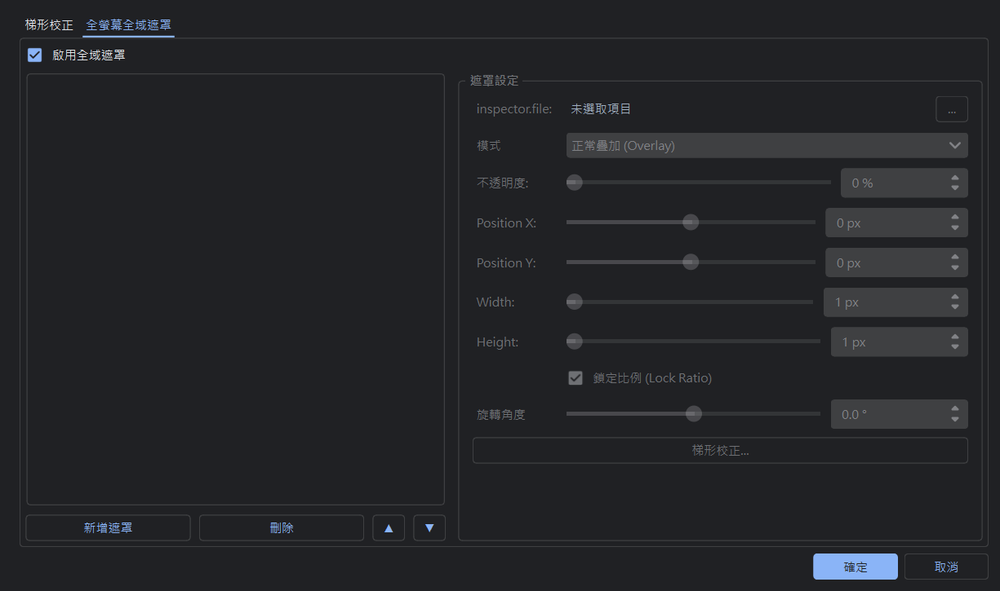
本軟體內建 OpenGL 螢幕空間遮罩引擎。您可以載入自訂的 PNG 形狀圖片，來對投影區域進行去邊、羽化、裁剪或遮蔽。
遮罩混合模式
- 標準 (Normal)：直接將遮罩圖片覆蓋在媒體畫面的最上方。
- 裁剪保留 (Crop)：僅保留遮罩圖片不透明/白色區域內的媒體畫面，其餘區域顯示為黑色。適用於圓形或三角形的投影外框。
- 遮蔽隱藏 (Block)：將遮罩圖片不透明區域後方的媒體畫面遮蔽，顯示為黑色形狀。非常適合用來遮擋舞台柱子、硬體設備或喇叭架的反光。
遮罩層級
- Cue 遮罩：使用者建立一個
CueType.MASK類型的 Cue，其中包含數個遮罩項目。其他圖片或影片 Cue 可以透過在其屬性面板的parent_mask_id中選擇該遮罩 ID 來套用。- 💡 成員新增限制：在遮罩 Cue 的屬性面板「群組/成員」清單中點擊「新增」時，系統僅會列出視訊 (Video) 與圖片 (Image) 類型的 Cue，因為音訊、時間碼等非視覺 Cue 無法套用遮罩。
- 全域螢幕遮罩：開啟「螢幕矯正」設定對話框，切換至「螢幕遮罩」分頁。在此設定的遮罩項目會套用至整個投影螢幕輸出。
💡 全域遮罩啟用開關
在「螢幕遮罩」設定頁面的最上方，設有一個「啟用全域遮罩」核取方塊。若您設定了複雜的全域遮罩圖層，但需要暫時投影全螢幕測試畫面進行對齊，只需取消勾選此方塊即可立即停用全域遮罩，而不會遺失已設定的遮罩項目。
9. 播放控制與鍵盤快速鍵
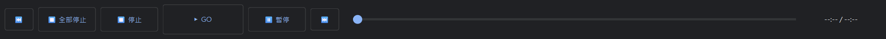
為確保現場演出的安全與執行效率，Cue Lab 設計了結構化的快速鍵與播放觸發機制。
核心播放快速鍵
| 快速鍵 | 控制按鈕 | 執行行為 |
|---|---|---|
Space |
工具列 GO | 觸發當前選取的 Cue。播放後會自動將播放指標 (Playhead) 移動至下一列。 |
Escape (ESC) |
工具列 Panic | 立即淡出並停止所有正在播放的音訊與影片。 |
P |
工具列 暫停 | 對所有執行中的 Cue 進行暫停/繼續播放切換。 |
↑ / ↓ |
工具列 上一個 / 下一個 | 上下移動播放指標 (Playhead) 的選擇列。 |
Delete |
工具列 刪除 Cue | 自列表中刪除當前選取的 Cue 列項目。 |
Ctrl + C |
- | 複製選取的 Cue 列及其內部所有參數至剪貼簿（若在文字輸入框內則為複製文字）。 |
Ctrl + V |
- | 將剪貼簿中的 Cue 複製並插入在當前選取列的下方，並自動重新分配唯一識別碼與遞增編號。 |
Ctrl + Z |
- | 復原 (Undo)。撤回上一步的參數修改、移動、複製或刪除。 |
Ctrl + Y |
- | 重做 (Redo)。重做被復原的動作。 |
💡 雙模式停止與 Group 重複停止過濾機制
為了解決現場演出複雜的調度需求，系統支援雙模式停止控制：除了全域 Panic (ESC) 會平滑淡出所有媒體外，使用者亦可在列表中選擇特定 Cue 並按 Stop 獨立停止該項目的播放線程。此外，當群組（Group Cue）設定了「停止前一個 (stop_previous)」互斥規則時，引擎會自動啟用重複停止去重過濾器。在向子項目分派停止指令時，會自動過濾掉那些「所屬 Group 本身也即將被停止」的子 Cue，防止子 Cue 因重複收到停止訊號而導致漸變計時器重設、淡出動畫失效或 VLC 底層爆音，確保演出切換流暢無瑕。
10. 時間碼系統 (Timecode)
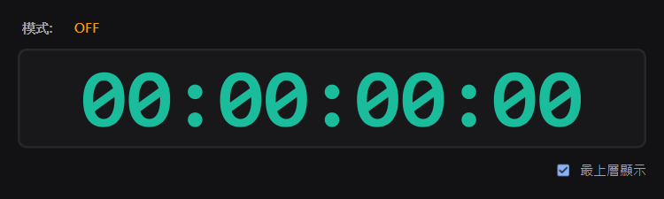
本軟體整合了 SMPTE 標準時間碼產生器，提供 LTC (音訊時間碼) 與 MTC (MIDI 時間碼) 雙模式輸出。適用於燈光音響、雷射、特效設備的大型聯動控制。
主要功能與技術特色
- LTC/MTC 雙模式輸出：LTC 支援音訊路由輸出並經過 Bessel 二階低通濾波處理；MTC 支援在偏好設定中選擇預設的 MIDI 埠或實體/虛擬 MIDI 裝置。
- 虛擬軟體時鐘 Fallback：若音效卡被獨佔或 MIDI 裝置衝突開啟失敗，會自動切換至虛擬高精度時鐘，依據
HH:MM:SS:FF幀率（支援 24/25/30 FPS）持續前進，不使演出中斷。 - 暫停狀態去重鎖 (Pause Deduplication)：防範 Group 群組暫停時由於多重 Toggle 回呼造成暫停狀態抵消而繼續播放。
- 時間碼與媒體進度 Seek 同步定位：在同一 Group 下，若對音軌或影片進行 Seek (播放進度調整)，系統會自動計算相對時間戳並同步對同組時間碼 Cue 進行
seek_seconds絕對對齊。 - 格式化遮罩輸入：時間碼偏移量在 Inspector 中提供
HH:MM:SS:FF遮罩輸入匡，格式化輸入並防呆。
11. 視訊預覽視窗 (Video Preview)
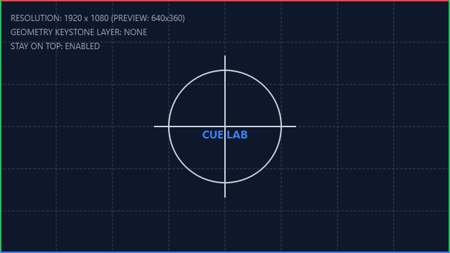
為了解決在單螢幕/筆記型電腦開發、排練或現場沒有連接外接投影機時的測試需求，軟體提供了「視訊預覽模式」。此模式可將原本在副螢幕/投影機全螢幕輸出的視窗，切換為具備視窗標題列與縮放按鈕的普通視窗，方便在主畫面中同時進行編輯與影像預覽。
功能特色與操作說明
- 雙模快速切換：在頂部選單「視窗 (Window)」→「視訊預覽模式 (Video Preview Mode)」中，勾選即可將投影視窗改為有框的視窗化預覽；取消勾選則自動恢復為全螢幕投影模式。此設定會自動儲存至偏好設定中，下次啟動時會記住上次的選擇。
- 最上層顯示 (Stay on Top)：當啟用預覽模式時，可進一步勾選選單中的「預覽最上層顯示 (Preview Stay on Top)」，此時預覽視窗會強制顯示在所有其他視窗的上方，方便在調整 Inspector 屬性或編輯 Cue 列表時，即時觀看畫面變化而不會被主程式視窗遮擋。
- 滑鼠拖曳與自由縮放：在預覽模式下，您可以使用滑鼠任意拖曳、調整預覽視窗的大小，甚至拉到任意螢幕位置進行排練模擬。
12. 專案管理與打包傳遞
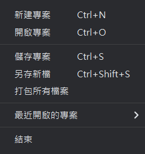
Cue Lab 專案以後綴名為 .cuelab.json 的專案檔進行儲存。該檔案保存了 Cue 的順序、所有時間長度、淡入淡出秒數、音量、幾何 Keystone 等中繼資料。
⚠️ 媒體路徑管理限制
預設情況下，當您新增媒體檔案至列表時，專案檔內保存的是您本機的絕對路徑（如 D:\ShowMedia\audio.wav）。若您需要將此專案拷貝到另一台演出電腦，可能會因為硬碟磁碟符、使用者名稱不同而導致媒體遺失 (File Not Found)。
打包所有檔案 (Package Project)
為了實現完美的專案攜帶，軟體內建了一鍵打包功能：
打包與移動流程
- 點擊選單「檔案」→「打包所有檔案...」。
- 選擇一個空的儲存資料夾，系統會自動在該資料夾內建立
audio/、video/與masks/子資料夾。 - 自動將您專案中使用到的所有音訊、影片、圖片與遮罩圖片複製拷貝至該資料夾中。
- 自動將專案 JSON 檔案內的所有絕對路徑改寫為以該資料夾為起點的相對路徑，並重新命名儲存。
自動路徑自癒機制
當您將打包好的專案夾複製到其他電腦並雙擊 .cuelab.json 開啟時，軟體會自動執行自癒：
- 優先偵測原有的絕對路徑是否存在。
- 若不存在，會自動抓取當前開啟之專案 JSON 所在的資料夾路徑，在當前的相對目錄（例如
audio/、video/、masks/等）下自動配對尋找同名的媒體檔案並修復。 - 這保證了拷貝後的專案能開箱即用，不會發生檔案遺失。
13. FADE 漸變與連續鏈控制 (FADE Cue & Chain Control)
FADE 漸變 Cue 是一個強大的非破壞性控制軌。它本身不包含任何媒體內容，而是專門用於在指定時間（Fade Time）內，對另一個目標 Cue 的音量、不透明度、畫面幾何尺寸（Transform）或 Keystone 幾何校正點進行平滑的漸變控制。
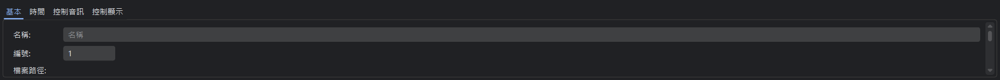
核心技術特點與工作機制
- 漸變目標遞迴追溯：在複雜的演出設計中，常會使用多個 FADE Cue 對同一個媒體進行連續鏈式控制（例如：Cue 1 媒體 -> FADE Cue 2 -> FADE Cue 3）。若 FADE Cue 3 的受控目標指向了前一個 FADE Cue 2，播放引擎會自動向上遞迴追溯，直到鎖定最底層的實體媒體（如 Audio 或 Video 實例），確保控制鏈完美傳導。
- 「設計與實時分離」值抓取 (Grab)：
- 設計抓取（Grab）：當您選中 FADE Cue 並點選「抓取目前值」按鈕時，系統採用前置 FADE 設定值 ──▶ 實時播放器 Live 值 ──▶ 媒體原始值的三級降級抓取邏輯。若前方有其他 FADE 控制同一個目標，它會優先抓取前置 FADE 的限制設定值（設計值），確保靜態設計的連續性，而不會受當前實時播放進度的隨機干擾。
- 實時播放（Live）：在現場演出 Go 觸發時，漸變會基於受控目標當時的 Live 實時播放數值作為起點進行漸變，確保無論是按順序執行還是跳躍執行，都能呈現滑順且正確的漸變軌跡。
- 即時預覽同步：當 FADE Cue 處於播放狀態時，您在屬性面板中執行的「抓取」或參數微調會繞過 UI 訊號防護，即時發送至渲染與播放引擎，實現所見即所得的即時調試效果。
14. 多螢幕投影與網路視訊串流 (RTSP & NDI)
Cue Lab 具備先進的多螢幕獨立投影定位與虛擬多螢幕網路視訊串流推流功能，滿足現場實體投影與網路拉流/串流同步的需求。
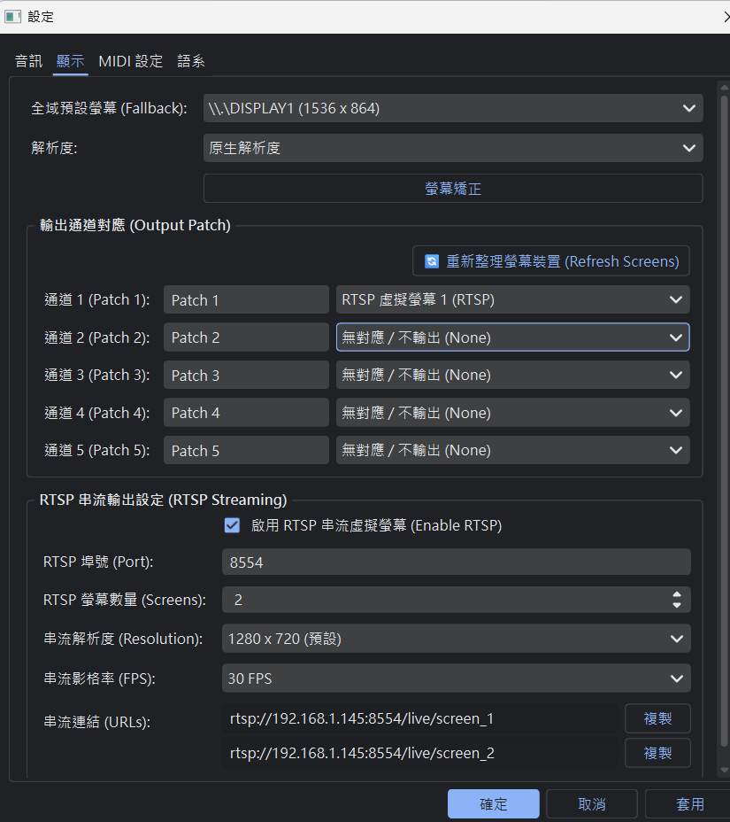
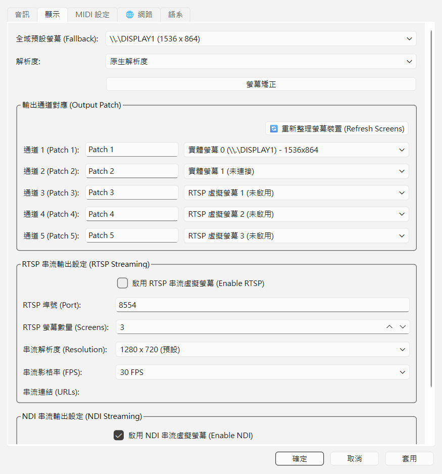
多螢幕獨立輸出與定位
在屬性面板的「顯示」分頁中，您可以為每個影像 Cue 獨立指定 output_screen（螢幕索引）。播放時，VideoEngine 會自動管理各實體顯示器的投影視窗，精確定位至對應的螢幕並以無邊框全螢幕覆蓋渲染，避免滑鼠指針或系統介面干擾舞台視覺。
RTSP 網路虛擬串流輸出
當您將影像 Cue 的 output_screen 設為大於等於 90 的索引時（如 90, 91...），該視窗將被定義為「虛擬螢幕」，並自動轉為背景 RTSP 推流模式，將渲染畫面即時廣播到局域網路上：
- 串流位址格式：系統內置輕量化 MediaMTX 串流伺服器，自動產生如
rtsp://<本機IP>:<Port>/live/screen_1的標準 RTSP 連結，外部設備（如 OBS、vMix 或實體解碼器）可直接拉流。 - 高可靠性編碼與自動降級：FFmpeg 推流器會優先啟用 NVIDIA GPU 硬體加速編碼（
h264_nvenc），若因驅動、硬體限制或工作階段上限啟動失敗，會在 0.2 秒內自動無縫降級至 CPU 軟體編碼（libx264），確保推流絕不中斷。 - 黑場不中斷推流與管線安全：
⚠️ 串流防中斷與遞迴重入保護
1. 黑場不中斷：串流生命週期與主程式綁定，不受媒體播放結束或 Blackout 暗場影響。在黑屏狀態下，系統會持續由 16ms 定時器主動抓取離屏 Framebuffer 輸出純黑幀，確保接收端（OBS）在演出空檔絕不因無訊號而斷線。
2. 遞迴重入防護：畫面抓取與推流信號完全由獨立定時器安全驅動，嚴禁在 OpenGL 的paintGL()內部調用grabFramebuffer()，避免引發致命的遞迴渲染重入與 pipe 阻塞崩潰，確保極致的穩定性。
NDI 網路視訊串流輸出
NDI (Network Device Interface) 是一種高頻寬、低延遲的局域網路視訊傳輸技術。軟體允許將主視訊渲染畫面即時轉為 NDI 訊號發送至區域網路：
- 虛擬螢幕隨動廣播：開啟 NDI 功能後，系統會將副螢幕視訊管線自動廣播為 NDI 串流服務，最多支援同時廣播 5 個獨立的 NDI 虛擬螢幕通道。
- 彈性的串流模式選擇：
- NDI Full (低延遲無損)：適合局域網路頻寬充足、追求完美畫質的演出現場，可提供幾乎零延遲 of 影音同步。
- NDI HX (低頻寬壓縮)：適合網路頻寬有限或跨網段傳輸的環境，採用高效率編碼壓縮。
- 無縫整合與路由切換：可在外部軟體（如 OBS、vMix、MadMapper）中直接以 NDI 訊號源讀取 Cue Lab 的投影畫面，實現無實體連接線的多軟體協同工作。
15. 網路控制 Cue (Network Cue)
網路控制 Cue (Network Cue) 提供強大的外部設備控制能力。在舞台演出中，您常需要控制投影機開關、投影遮蔽、或是連動外部燈光主控台與音效軟體。此 Cue 支援標準的 PJLink (投影機控制) 與 OSC (Open Sound Control) 協定，透過網路自動化執行硬體或軟體控制指令。
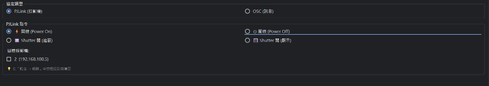
核心通訊協定與應用場景
- PJLink 投影機控制協定：
- 隨動指令控制：支援發送「⚡開機 (Power On)」、「⏻關機 (Power Off)」、「🔲Shutter 關 (遮蔽畫面)」、「🔳Shutter 開 (顯示畫面)」等標準投影機指令。
- 多設備獨立/同步管理：可在屬性面板中多選多台目標投影機。您可以在偏好設定的「網路」分頁中統一設定各個投影機的 IP 地址、連接埠 (Port) 與驗證密碼。
- OSC (Open Sound Control) 網路封包：
- 多主機廣播/單播：支援向自訂的一個或多個目標電腦（如現場的主/備燈光控制台、QLab 音效電腦、視訊伺服器）發送標準 OSC 控制字串。
- 控制指令路徑：例如輸入
/eos/cmd/Group/3000/FAN_CENTER，即可在演出觸發此 Cue 時，即時改變燈光台上的控制狀態。可在偏好設定的「網路」分頁管理目標電腦 IP 清單。
16. sACN (E1.31) 燈光網路遙控
sACN (Streaming ACN, ANSI E1.31) 是現代劇場與大型展演中廣泛採用的乙太網路 DMX 控制協定。Cue Lab 內建工業級高靈敏度 sACN 網路接收引擎，允許外部專業燈光控台（如 GrandMA2/3、ETC Eos/Ion、Avolites、Chamsys 等）透過區域網路直接遠端觸發 Cue 播放與控制，實現燈光與多媒體音視效的精準同步。
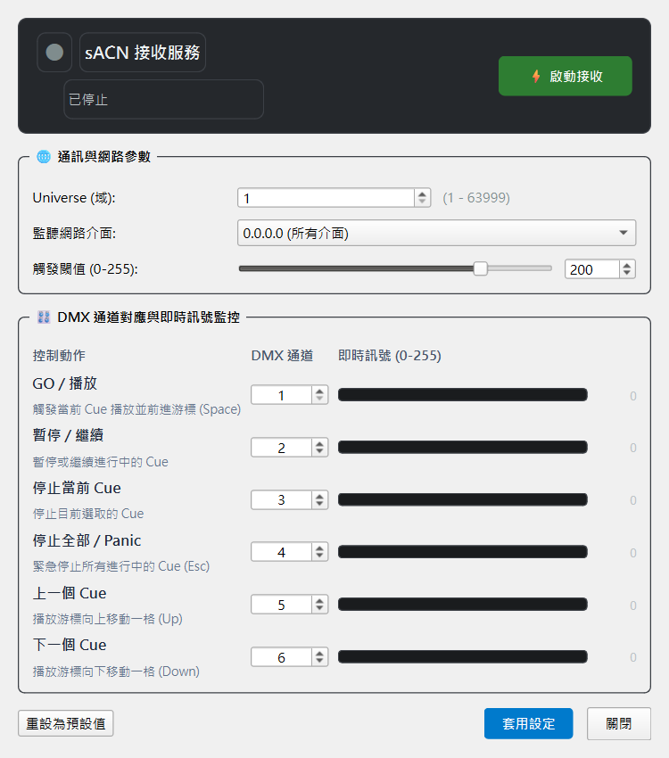
支援的 6 大控制動作
| 控制動作 | 預設 DMX 通道 | 功能說明 |
|---|---|---|
| GO / 播放 | Ch 1 |
觸發當前選取的 Cue 播放，並自動前進游標至下一個 Cue（等同於鍵盤 Space）。 |
| 暫停 / 繼續 | Ch 2 |
暫停或繼續進行中的 Cue（等同於鍵盤 Pause）。 |
| 停止當前 Cue | Ch 3 |
僅停止目前選取的單一 Cue，不影響其他正在運行的音訊或視訊軌。 |
| 停止全部 / Panic | Ch 4 |
緊急停止所有正在運行的 Cue 與計時器（等同於鍵盤 Escape）。 |
| 上一個 Cue (Prev) | Ch 5 |
將待播游標向上移動一格（等同於鍵盤 ↑ 上箭頭）。 |
| 下一個 Cue (Next) | Ch 6 |
將待播游標向下移動一格（等同於鍵盤 ↓ 下箭頭）。 |
核心設定參數
- Universe (域編號)：設定監聽的 sACN Universe（預設為
1，範圍 1 ~ 63999）。控台必須向同一個 Universe 發送封包。 - 監聽網路介面 (Bind IP)：可選擇
0.0.0.0 (所有介面)或綁定現場燈光專用網卡之實體 IP，確保封閉網段安全。 - 觸發閾值 (Trigger Threshold)：DMX 數值範圍為 0 ~ 255（預設為
200）。當控台推桿推過 200 時立即觸發動作。 - DMX 通道自訂映射：可自由為 6 個動作配置 1 ~ 512 任意獨立通道，並內建通道重複衝突檢驗保護。
💡 工業級抗噪與狀態鎖定 (State Latch)
1. 單次狀態鎖定：當燈光控台推桿超過閾值（如 200）時，系統立即觸發一次動作並鎖定；推桿維持高位或持續推拉時絕不重複連發，必須降回閾值以下重新就緒，確保現場走 Cue 絕對精準。
2. 優先級封包過濾：自動識別並過濾 E1.31 Per-Channel Priority 優先級封包（StartCode 0xDD），只處理真正 DMX 數值，杜絕網路連鎖誤觸。
17. 雙機熱備份與連線同步 (Dual-Machine Redundancy)
在國家級劇院或大型商演中，單機當機可能造成重大演出事故。Cue Lab 內建雙機主備熱備份 (Dual-Machine Hot-Standby) 架構，支援兩台電腦（主控機 Master 與備用機 Standby）在局域網內進行高精度狀態跟隨與素材鏡像同步，確保隨時可無縫接管演出。
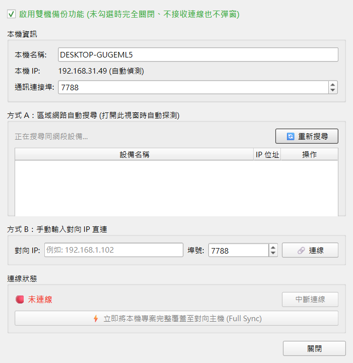
核心功能與同步機制
- 局域網自動探索 (Auto-Discovery)：透過 UDP 廣播自動搜尋同網段中運行 Cue Lab 的主備設備，免去繁瑣的 IP 查詢，點擊即可一鍵連線。
- 手動對向 IP 直連：支援手動輸入對向電腦之 IP 與通訊連接埠（預設
7788），適用於跨子網或固定 IP 網路環境。 - 即時播放傳輸同步 (Transport Sync)：
- 主控機按下
GO、Pause、Stop或移動 Playhead 待播游標時，備用機以微秒級網路延遲即時跟隨。 - 支援雙向心跳檢測 (Heartbeat)，工具列即時顯示連線狀態燈號（🟢 已連線 / 🟡 連線中 / 🔴 未連線）。
- 主控機按下
- 全專案與素材覆蓋同步 (Full Sync)：點擊「立即將本機專案完整覆蓋至對向主機」按鈕，系統會自動將當前專案與所有關聯之音訊、視訊、圖片素材封裝傳輸，一鍵確保兩台電腦素材庫百分之百一致。
18. 故障排除
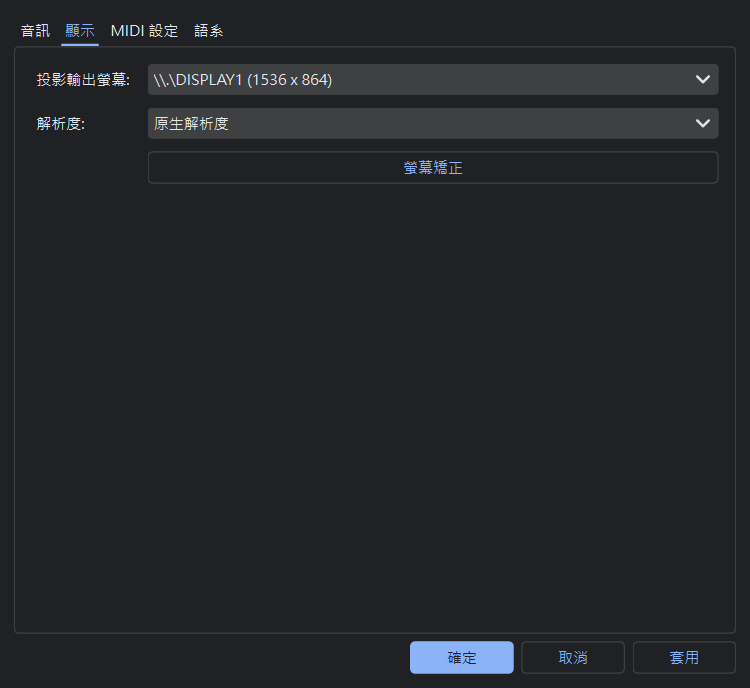
Q1: 副螢幕/投影機無法輸出畫面？
解決方案：
- 請先在 Windows 顯示器設定中，將外接螢幕設定為「延伸」模式，而非「同步/複製」模式。
- 開啟軟體「設定」對話框，在「顯示設定」下的「投影輸出螢幕」下拉選單中選擇對應的外接顯示器 index（通常為 1 或 2），再點選確定或套用。
Q2: 影像邊界被切掉，或梯形校正後拉伸變形？
解決方案：
- 請在設定中將解析度從「原生解析度 (Native)」切換為固定的比例（例如 1920x1080）。
- 選取該影像 Cue，在 Inspector 的「顯示」分頁中嘗試將「縮放模式」切換為
Fit或Fill，以利合適地自適應。
Q3: 播放影片或音樂時發生沒有聲音的情況？
解決方案：
- 請在屬性面板「音訊」分頁中，檢查「輸出裝置」下拉選單。確認是否被分配到了錯誤的聲卡或已拔除的裝置。建議改選為「系統預設 (default)」或重新選擇當前作用中的實體聲卡。
- 確認屬性面板中的「輸出音訊」核取方塊有勾選（若無勾選會強制靜音）。
Q4: 按下鍵盤 Ctrl+Z 沒有反應？
解決方案：
- 請確保目前主視窗的焦點位於 Cue 列表上（可在列表空白處點擊滑鼠左鍵）。若焦點正停留在某些屬性輸入框內，快速鍵會優先提供文字編輯撤銷。
Q5: 燈光控台發送 sACN 無法觸發走 Cue？
解決方案：
- 確認頂部工具列上的
📡 sACN按鈕為啟動狀態（顯示 Universe 編號而非「關閉」）。 - 打開「設定 ──▶ sACN 遙控設定」，確認 Universe 編號 與 DMX 通道對應 與燈光控台完全一致。
- 確認主機 Windows 防火牆已允許 Cue Lab 接收 UDP 5568 廣播封包，且控制電腦與燈光台處於同一個 IP 網段（例如 192.168.1.x）。
Q6: 雙機熱備份無法搜尋到對向電腦或連線失敗？
解決方案：
- 請確認兩台電腦皆勾選了「啟用雙機備份功能」，且「通訊連接埠」（預設 7788）保持一致。
- 若自動搜尋未能列出設備，請改用「方式 B：手動輸入對向 IP 直連」，直接填寫對向主機的區域網路 IP 地址後點擊「連線」。